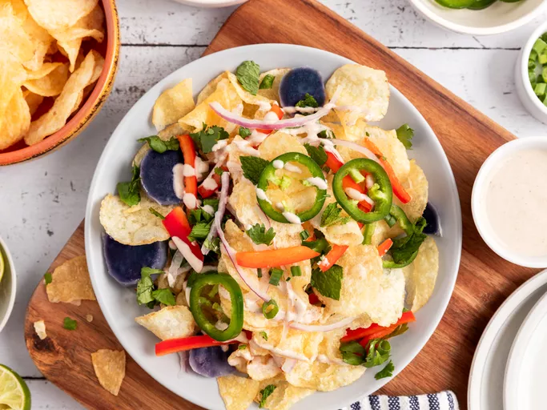

About
looking for simple,crunky and very tasty Recipe ?
Indian Potato Chip Salad is for you. which takes no time to make and brings taste of street food in your mouth
Ingredients
For the Yogurt Sauce:
- 1 ½ cups plain Greek yogurt
- 2 medium limes, juiced
- 2 teaspoons tamarind paste, or to taste
- 1 ½ teaspoons garam masala
- ½ teaspoon ground cumin
- 2 teaspoons hot sauce
- 1 teaspoon white sugar
- ¼ cup water, or as needed
For the Salad:
- 12 cups kettle-cooked potato chips
- ½ cup thinly sliced jalapeno pepper
- ½ cup thinly sliced red bell pepper
- ½ cup thinly sliced red onion
- ½ cup thinly sliced green onion
- 1 cup sliced cooked purple potatoes (optional)
- 1 cup chopped fresh mint leaves
- 1 cup chopped fresh cilantro leaves
- 2 medium limes, halved
Steps
- Combine yogurt, lime juice, tamarind paste, garam masala, cumin, hot sauce, and sugar in a bowl with
a whisk
until combined. Taste and adjust as needed; mix in water as needed to reach desired consistency.
- Layer chips, jalapeno, bell pepper, red and green onions, potatoes, mint, cilantro, and yogurt sauce
as
desired for individual portions, or this can be served salad bar-style and everyone can make their
own
plate.
- Squeeze lime juice from halves over top and enjoy!